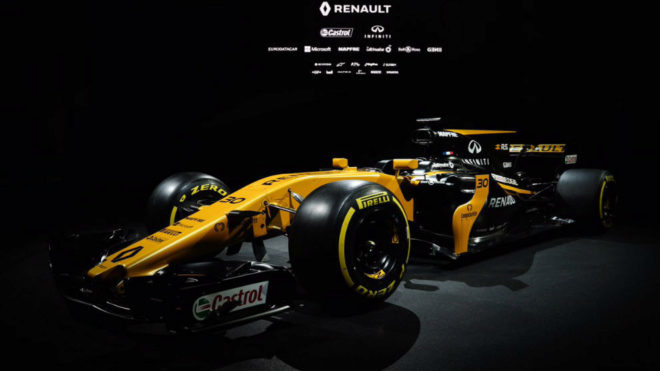

RENAULT
HOME

Historia
La corporación Renault fue fundada en 1899 como Société Renault Frères (Sociedad Hermanos Renault, en español) por Louis Renault y sus hermanos Marcel y Fernand.56 Louis era un ingeniero joven y brillante que ya había diseñado y construido varios prototipos antes de unirse a sus hermanos, quienes habían perfeccionado sus habilidades empresariales trabajando para la empresa textil de su padre. Mientras que Louis se encargó del diseño y la producción, Marcel y Fernand administraron el negocio.
El primer coche de Renault, el Renault Voiturette 1CV, fue vendido a un amigo del padre de Louis después de darle un paseo de prueba el 24 de diciembre de 1898.
En Colombia, la situación, ya a finales de la década de los 80 y a principios de la década de los años 1990, se nota una reducción, de manos de la fuerte presencia de Chevrolet, y ya en los 90 en la política de la apertura económica del gobierno del presidente Cesar Gaviria Trujillo, quien no hace más que crear una nueva oportunidad para los fabricantes de automóviles locales: La Exportación de sus productos a países diferentes del Mercado Andino. Es así como se llegan a conocer modelos que no gozarían de la misma fortuna de los anteriormente citados, como el Renault Laguna y el Renault Scénic. Pero otros coches, como el Renault Twingo (descontinuado recientemente en julio del 2012), y el Renault 19 (descontinuado en el año 2005) lograrían restablecer su perdida presencia en el mercado.
Hoy día, coches como el Renault Logan, el Renault Sandero y el Sandero Stepway, así como el Renault Duster, junto con sus coches importados desde Turquía, España, Argentina y Brasil han hecho de la marca un constante protagonista de la industria automovilística.